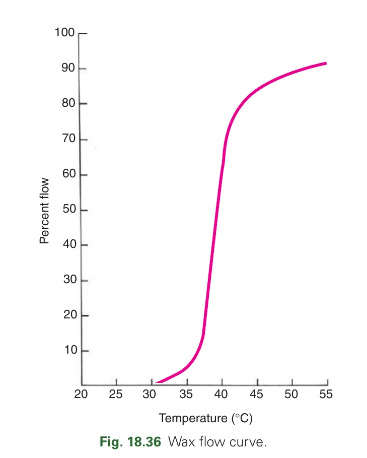

نسخه استخراجشده؛ ترجمه یا تأیید علمی انجام نشده است. وضعیت: captured
تکنیک لاستواکس، گام به گام: «گرفتن قالب دقیقی از دندان تراشیدهشده؛ ساخت کست از قالب؛ شکل دادن الگوی مومی شبیه شکل ترمیم دائمی روی آن؛ ساخت مولد دور الگوی مومی با مادهی اینوستمنت نسوز؛ پس از ست شدن اینوستمنت، تبخیر موم در کورهی الکتریکی؛
پر کردن مولد توخالی با آلیاژ ریختهگری مذاب یا سرامیک پرسشده، که هر جزئیاتی از الگوی مومی را بازتولید میکند؛ و سرانجام بازیابی ریختگی، برداشتن مادهی اضافی و فینیشینگ.» و چرا غیرمستقیم؟ چون ساخت مستقیم ترمیمهای دائمی خارجتاجی در دهان پرزحمت و زمانبر است، عملاً همهی الگوهای مومی در آزمایشگاه ساخته میشوند.
و ریشههای باستانی: «تکنیک لاستواکس بهطور گسترده در ساخت صنعتی و جواهرسازی به کار میرود. نخستین ریختگیهای برنزی گزارششده در هزارهی سوم پیش از میلاد با موم عسل و مواد نسوز رسی ساخته شدند.» و شواهدش: «برنزهای چینی، خدایان مصری و مجسمههای یونانی که قرنها دوام آوردهاند.» و «ممکن است در سومر در دورهی سلسلهی اولیهی دوم (۲۷۰۰ تا ۲۵۰۰ پیش از میلاد) برای پیکرکها به کار رفته باشد.»
و نخستین مانع عملی — آندرکات: «حتی یک آندرکات بسیار کوچک روی دای، برداشتن الگوی مومی را بسیار دشوار میکند. فرورفتگیهای کوچک روی دای — ناشی از برداشت پوسیدگی یا از دست رفتن ترمیم قبلی — ممکن است نسبت به مسیر قرارگیری ترمیم برنامهریزیشده آندرکات باشند.»
و روال معمول: «چنین نواحی بهطور معمول داخل دهان با گلاسآینومر بلاکاوت یا با آمالگام یا مادهی فونداسیون مناسب دیگری ترمیم میشوند، بهعنوان بخشی از فاز آمادهسازی دهان.»
و جایگزین آزمایشگاهی، با یک قید عددی: «گاهی بلاکاوت کردن آنها روی دای کاری ممکن است عملیتر و راحتتر باشد، تا زمانی که نقص تا فاصلهی یک میلیمتری لبهی حفره امتداد نیابد. سمان زینکفسفات مادهی مناسبی است، ولی محصولات تجاری دیگری مانند رزین نیز در دسترساند.»
و اصلی که باید بر آن پافشاری کرد: «فلسفه، تکنیک و روشهایی که بیان شدند، اصول بنیادی دندانپزشکی ترمیمیاند. فناوریهای جدید تنها اگر با درک کاملی از دندانپزشکی جامع پایه ترکیب شوند موفق خواهند بود؛ فناوری جدید و رایانهای شدن روشها را کارآمدتر، کمزحمتتر و یکنواختتر میکند، ولی نیاز به آموزش، تجربهی عملی و قضاوت بالینی و فنی را جایگزین نخواهد کرد.»
دایاسپیسر — چیست و کجا نباید برود: مادهای شبیه رنگ هواپیمای مدل که «روی دای زده میشود تا فضای سمان میان دیوارههای محوری دندان تراشخورده و ترمیم را افزایش دهد» و «طوری فرموله شده که هنگام رنگشدن روی دای ضخامت ثابت بماند». اما قاعدهی قاطع: «نباید کل تراش را بپوشاند. برای تطابق لبهای کافی، نواری به عرض حدود ۱ میلیمتر بلافاصله مجاور لبهی تراش باید رنگنشده بماند.»
و خطای رایج: حلال دایاسپیسر تبخیر میشود و «استفاده از دایاسپیسر غلیظشده میتواند به ضخامت بیشازحد اسپیسر بینجامد» — به همین دلیل تینر همراه محصول عرضه میشود. و یادآوری مهم: «هرچند بسیاری از تکنسینها کاربرد روتین دایاسپیسر را توصیه میکنند، این تنها یکی از گزینههای متعدد اثرگذار بر اندازهی فضای سمان است.»
علامتگذاری لبه — و چرا مداد معمولی ممنوع است: «آگاهی تکنسین از موقعیت دقیق لبهی تراش حیاتی است» و با کنارهی نوک مداد رنگی مشخص میشود که «باید با رنگ مومِ مصرفی تضاد داشته باشد» — مثلاً مداد قرمز برای موم سبز. اما «مداد سربی معمولی توصیه نمیشود» به سه دلیل: «میتواند دای را بساید، رنگ تیرهترش میتواند در تأیید تطابق درست موم در لبه اختلال کند، و ردهای گرافیت که یک آنتیفلاکس است میتواند مانع ریختهشدن کامل لبهها شود».
و تحکیم لبه: لبههای علامتگذاریشده را میتوان «با رزین سیانواکریلات کمویسکوزیته پوشاند و بلافاصله خشک کرد»؛ اگر درست انجام شود، «این روش بیش از ۱ میکرومتر به دای نمیافزاید». اما «لایهی ضخیم سیانواکریلات میتواند به فیت غیرقابلقبول ترمیم نهایی بینجامد» — و به همین دلیل «باید از رزینهای با ویسکوزیتهی بالاتر پرهیز شود».
شیمی موم اینله: در واقع مخلوطی از چند موم است؛ پارافین معمولاً جزء اصلی با ۴۰ تا ۶۰ درصد، و باقی شامل رزین دامار برای کاهش پوستهشدن بهعلاوهی کارنوبا، سرزین یا کاندلیلا برای بالابردن دمای ذوب، یا موم زنبور؛ و رنگها برای ایجاد تضاد رنگی افزوده میشوند.
و دو تیپ استاندارد ANSI/ADA: تیپ I موم با سختی متوسط، عموماً برای تکنیک مستقیم و ساخت الگو در دهان — که «نباید در دمای دهان جریان محسوسی داشته باشد» و در ۳۷ درجه کارور و برنیش میشود؛ و تیپ II موم نرمتر برای تکنیک غیرمستقیم — که «باید در دمای اتاق در برابر جریان مقاومت کند تا شکل تازهساختهاش را حفظ کند» و در ۲۵ درجه کار میشود. و شرط سوختن: «هیچ خاکستر باقیماندهای نباید باشد»، هرچند استاندارد ۰٫۱ درصد باقیمانده را مجاز میداند که ناچیز است.
و مهمترین پیامد عملی — تنش نهفته در موم: «وقتی موم افزوده، تنش را در الگو نهادینه میکند، این تنش با گذشت زمان آزاد میشود و سپس الگوی مومی را دچار اعوجاج میکند»؛ و «نرخ تغییر موم وابسته به دماست، یعنی در دماهای محیطی بالاتر بیشتر میشود».
نتیجهی قاطع: «لبهها باید بلافاصله پیش از اینوستینگ دوباره ذوب، بازتطبیق و بازصاف شوند» — و فیت داخلی همان بخش بازذوبشده به سطح تراشخورده نزدیکتر میشود «و بنابراین ممکن است به ایجاد فضای لازم برای عامل چسباننده کمک کند».
